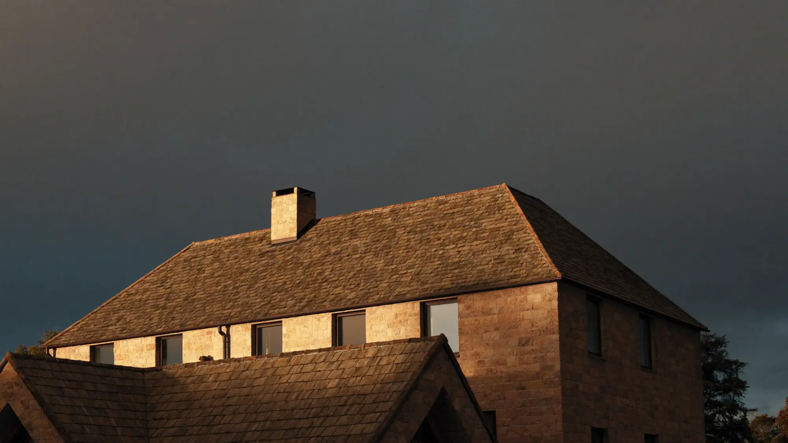
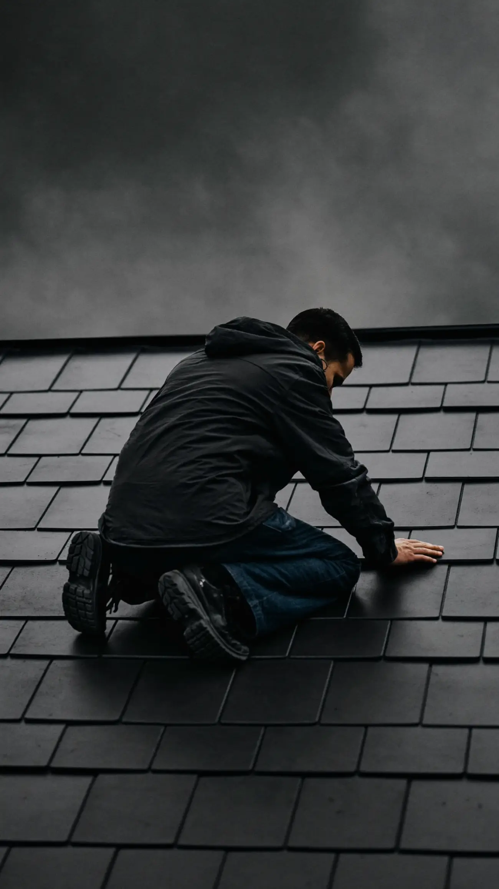
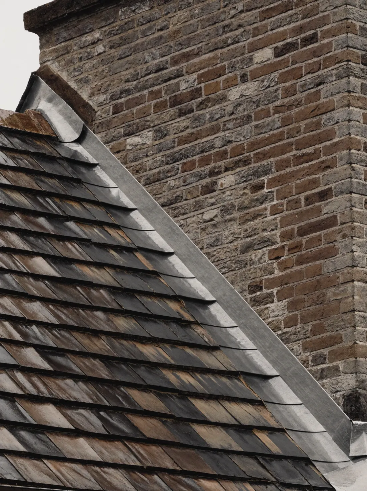
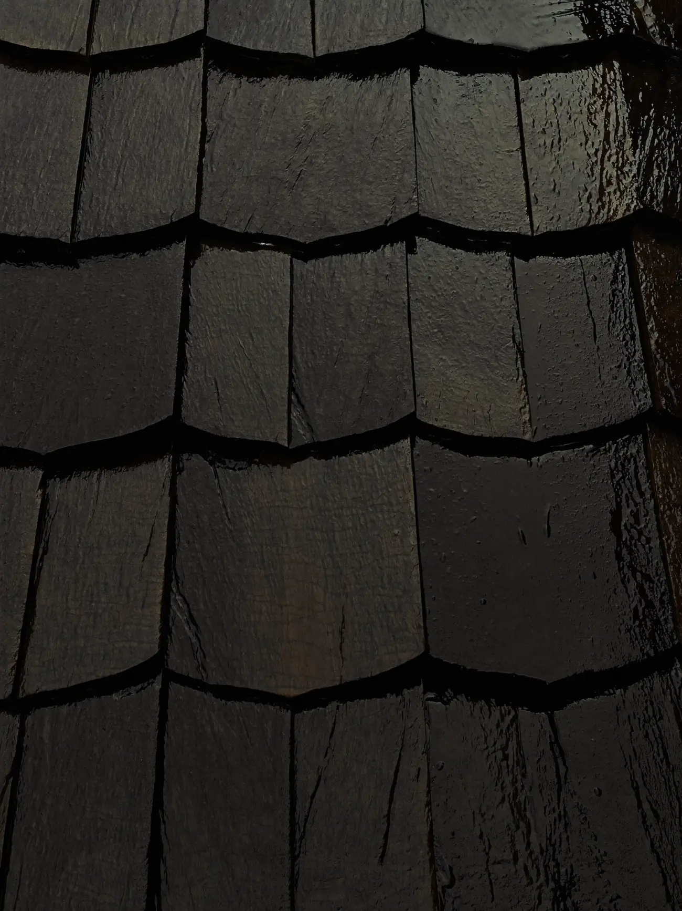
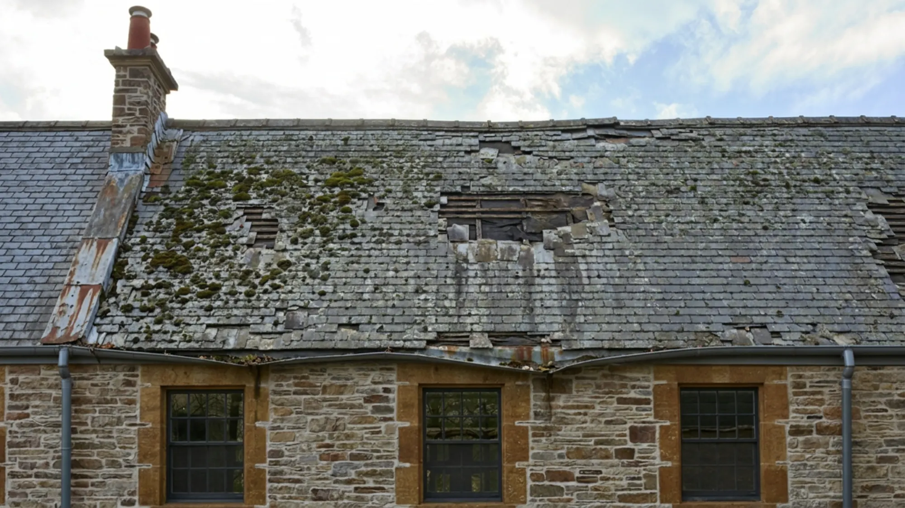

Slate, tile and flat roofing
Built forthe storm.
New roofs, repairs, leadwork and flat roofs. Done properly the first time, and guaranteed in writing.
You only notice a roof when it fails. We build the kind you forget about: every slate hung true, every joint dressed in lead, every gutter falling the right way.

Slate by slate
Natural slate, hand fixed with copper nails and set out to the gauge. The way roofs were built to last a century.

Leadwork that lasts
Flashings, valleys and chimney soakers dressed by hand. This is where most leaks start, so it is where we slow down.

Watertight, not just tidy
Breathable membranes, proper ventilation and battens graded right. The parts you never see decide how long the roof lasts.

Same house, one re-roof later
Leaking to landmark.
What we do
Every roof, top to gutter.
- 01New roofs and re-roofsComplete strip and replace in natural slate, clay or concrete tile, with new membrane, battens and ventilation.
- 02RepairsSlipped and broken slates, ridge and hip repointing, and leak tracing that finds the cause, not just the drip.
- 03Flat roofsEPDM rubber and GRP fibreglass systems for extensions, garages and dormers, with roof lanterns fitted.
- 04Leadwork and chimneysFlashings, valleys, chimney rebuilds and repointing, all dressed by hand.
- 05Gutters and fasciasReplacement fascias, soffits and gutters that keep water where it belongs.
- 06Storm call outsEmergency temporary cover to make your home watertight fast, followed by a proper repair.
Recent roofs
Look up.
How it works
A roof you can trust in four steps.
We get up there, photograph everything and show you exactly what we found.
A clear itemised quote with materials named, so you can compare like for like.
Scaffold up, old roof off, new roof on, with the house kept watertight every night.
Final photos, building control sign off where needed and a written workmanship guarantee.
Book a free roof survey